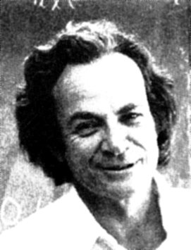
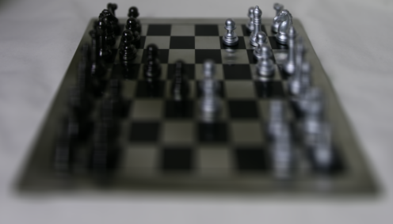
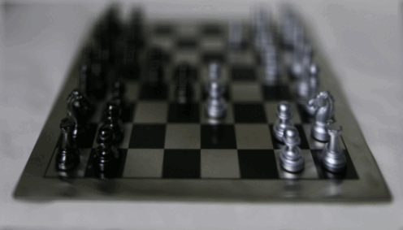
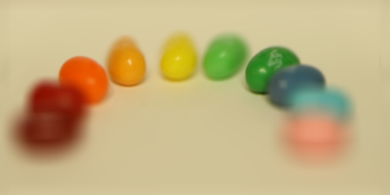
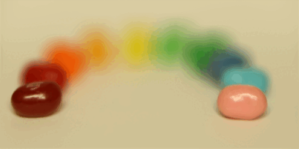
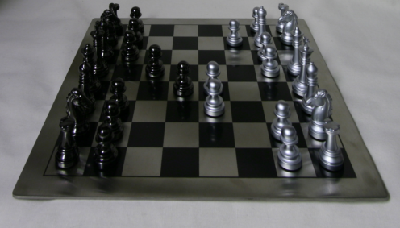
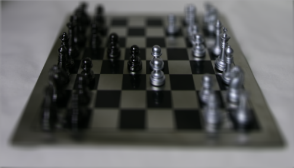
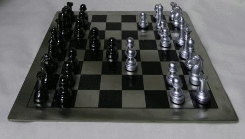
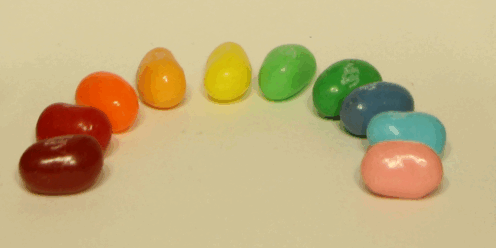

In order to transfer one texture to another photo, we need to be able to synthesize the texture from scratch so that it can be transferred. The brute force approach to recreate a texture given the sample image is to just sample random patches of the texture image and place the random sampled patches on a blank canvas. This can be done in a simple double for loop, but the output doesn't look seamless -- it is very obvious I placed random patches onto a canvas.
For this part, the only hyperparameters are output size and patch size. I did an output size of 200 and patch size of 15.
A better approach is to 1) place the first patch, and then 2) choose subsequent patches that have the lowest sum of squared difference (SSD) to the initial patch and overlap them with the first patch, and then 3) repeat for all other patches. The SSD calculation can be quickened using a mask (that is 0 for non-overlap parts and 1 for overlapping parts) and convolution via the equation provided in the spec. The hardest part about this approach was realizing that there were 3 types of overlap: 1) the case where the initial patch is on the left of the new patch, 2) the case where the initial patch is under the new patch, and 3) the case where it is both. The result is significantly better than that of 1.1, but there are still some parts that look strange if you look closely.
In addition to the hyperparameters of the previous part, this part also has hyperparameters overlap and tol (the tolerance). The tolerance signifies how many of the lowest patches I choose from, i.e. tol = n means I choose one patch from the n patches that have the lowest SSD. For this output, I made my output size 300, patch size 20, overlap 10, and tol 5.

An even better approach is to not just overlap them but also calculate the best way to blend the overlapping parts using the provided cut function. In order to do this, I introduce new masks -- a vertical mask, horizontal mask, and combination mask (shown below). The vertical mask determines where to cut the horizontal overlap, while the horizontal mask determines where to cut the vertical overlap. The combination mask combines the vertical mask and horizontal mask via a logical AND operation. This method provides the best result out of the three methods.
Hyperparameters for all images below are: out_size = 300, patch_size = 25, overlap = 11, tol = 5


I can use almost the same code to transfer the sampled texture on another image. The only difference between part 1.3 and part 1.4 is that for part 1.1-1.3 I calculated the SSD of different patches of the same image, but for 1.4 I calculate the SSD of different patches for both the texture image and the guidance image (the image I want to transfer the texture onto) and blend them together according to a hyperparameter alpha (higher alpha = looks more like guidance image).




I use a mask and Laplacian Pyramids from Project 2 to blend the image above into an image of toast, so that it looks like a man inside toast.


Aside: Burnt Bread I accidentally loaded the images as uint type, I got a funny image that I wanted to share. It looks like it could be on a t-shirt.

In this project I played around with image quilting. One key takeaway is that the code for transfering texture from one image to another is very similar to that of recreating texture from just one image.
In this part, I average a shifted version of photos to get different camera focuses of an image. The Stanford Light Field Archive website contains a folder of photos of a chessboard on a 17x17 (x, y) grid (labeled by their filename, which is in the form y_x_v_u, where each photo of the chessboard is taken from a slightly different camera position (u, v). Since the grid is 17x17 and the filenames are consistent, I can extract the (u, v) camera position of the center photo at grid position 08, 08 and shift all other photos according to this center photo by doing u-center_u, which I call du and dv. I normalized all photos by dividing du by max(us) - min(us) for both u values and v values, but I also tried just scaling them without dividing, and that worked too (I don't think it matters too much -- it just inflates the alpha values if I divide it, especially if I'm dividing by a large u_value/v_value range). I then multiply du and dv by a scaling factor alpha, which determines how much I want to shift the images before averaging. The average photo without any shift (alpha = 0) is far-sided (i.e. the close objects are out of focus). However, when I multiply by a negative alpha, I get a more near-sided image.


The left shows the average image (alpha=0), while the right gif shows images with varying alpha values (-40 to 10). For the version where I scale the images instead of normalizing (i.e. don't divide), My alpha value range was -0.5 (near sided) to about 0.3 (far sided).


I can control the amount of focus to show just the near/far jelly beans (alpha=0 vs 60), while the right gif shows images with varying alpha values.
Making a small adjustment to the averaging algorithm -- if I introduce a radius parameter that restricts the number of photos used to just those that are in a certain radius, I can focus different parts of the image and change the aperature:



Keeping alpha constant (-30), I changed the radius from 0 (left) to 1 (middle). The gif shows the outer parts of the image get out of focus as the radius increases.

The alpha parameter decides which part of the image will become out of focus. Both gifs show the radius progression from 0.0 to 0.6, but for the left gif I used an alpha value of 0 while for the right gif I used a value of 1.
One key takeaway from this project is that playing with focus is relatively simple. I was amazed how I can adjust the focus of photos that are already taken, because I thought only cameras can do that before actually taking the photo.